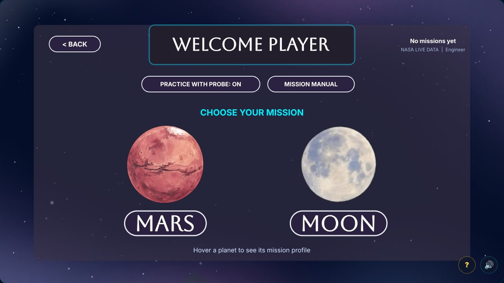
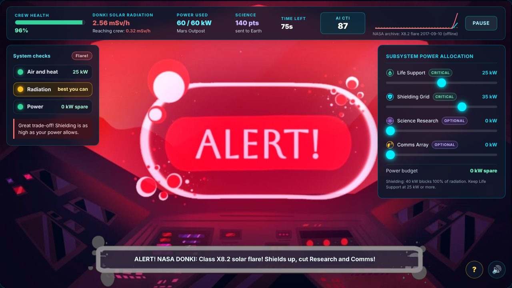
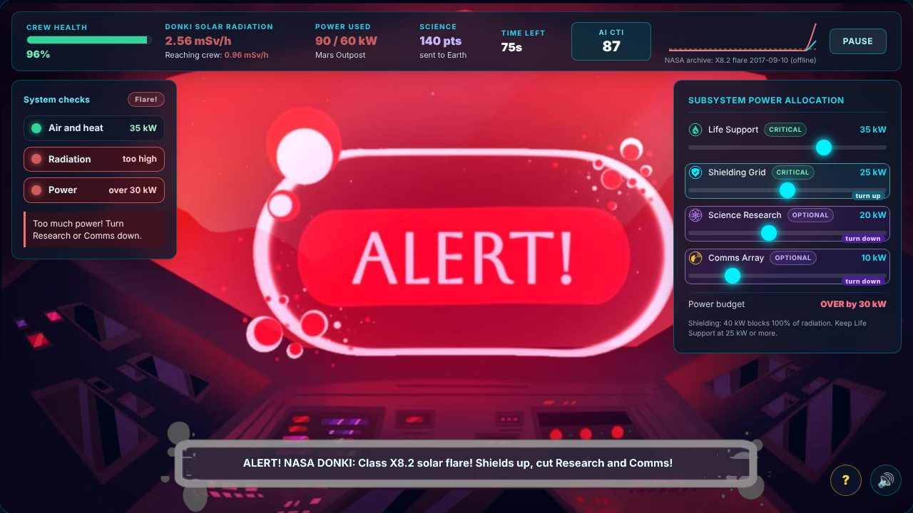
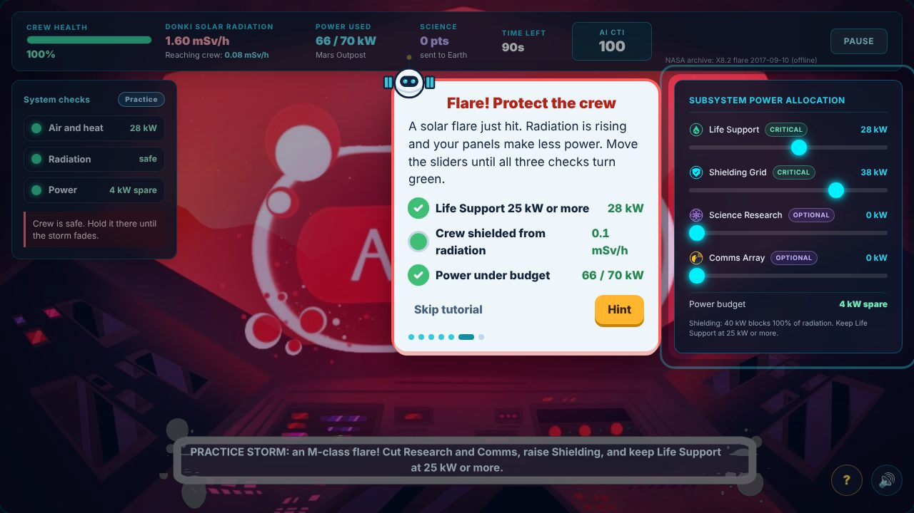
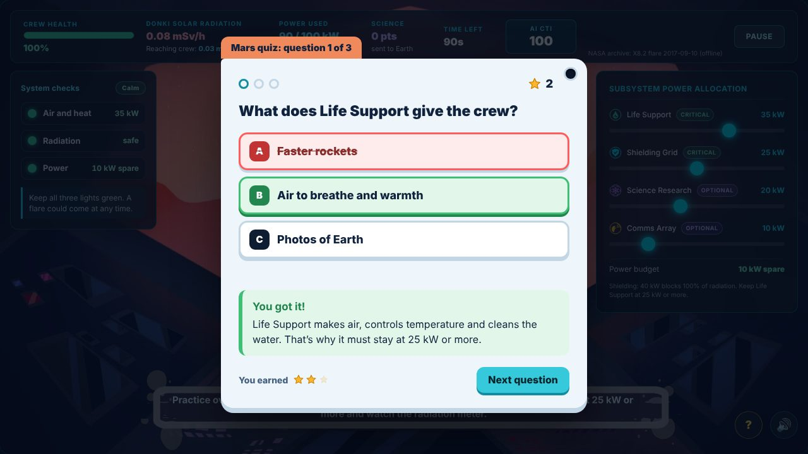
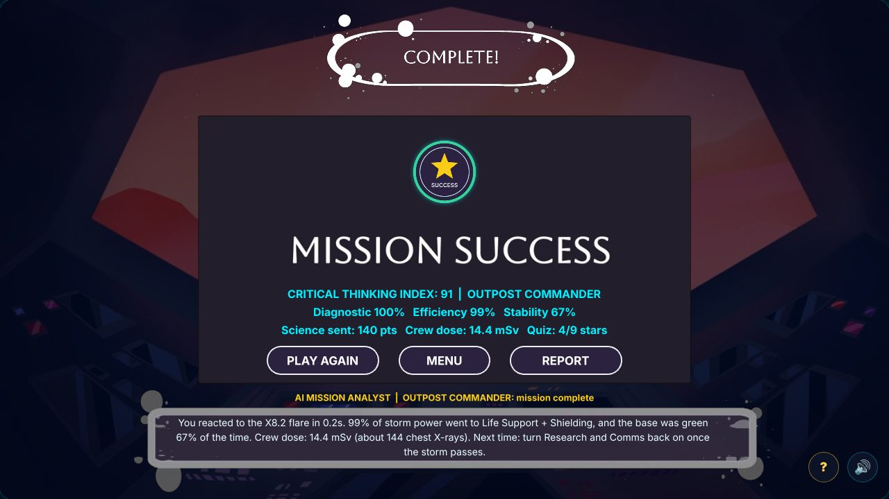

PROBE
THE BASE
Mission Manual for junior astronauts
- Who it’s for
- Players aged 7 to 12, their teachers and their families
- What’s inside
- How to play, the storm checklist, the space quiz, a lesson plan and a worksheet
- Real data
- Solar flares and CMEs from NASA DONKI, crew-health rules informed by NASA OSDR
Version 3.0 · NASA Space Apps Challenge · Not endorsed by NASA
What’s in this manual
| Part | Chapter |
|---|---|
| Cadet handbook for players | 1 · Your mission |
| 2 · Meet your base | |
| 3 · The three golden rules | |
| 4 · Reading your screen | |
| 5 · When the alert goes off: the storm checklist | |
| 6 · Practice with Probe | |
| 7 · The space quiz and your stars | |
| 8 · Your score and your rank | |
| 9 · Pro tips and space words | |
| Teacher and parent guide | 10 · What children learn |
| 11 · A 45-minute lesson | |
| 12 · Questions to talk about | |
| 13 · Worksheet: power puzzles (with answers) | |
| 14 · Mission log | |
| 15 · Where the science comes from | |
| Quick reference | Controls, numbers, settings and the quiz answer key |
Grown-ups: children can read Part 1 on their own or with you. Part 2 has everything you need to run the game as a class activity.
Cadet handbook
Everything you need to keep your crew safe when the Sun throws a storm at your base.
1Your mission
You are in charge of the power on a space base, on Mars or on the Moon. Your crew lives inside. Your job is to keep them healthy for the whole mission, which lasts 90 seconds. In the game, every second is one hour on the base.
The Sun sometimes has storms. A solar flare sends out a burst of radiation that can hurt your crew, and it makes your solar panels give you less power. The flares in this game come from NASA’s real space-weather database, so your mission can change from day to day.
Mars has very thin air and the Moon has almost none. Neither one has a magnetic bubble like Earth does, so radiation from the Sun reaches the ground. That’s why your base needs shields.

| Base | Solar panels | When the flare hits | Real flare used offline |
|---|---|---|---|
| Mars (Jezero Crater) | 100 kW | Hour 15. Panels drop to about 60 kW. | X8.2 flare, 10 September 2017 |
| Moon (Shackleton Crater) | 80 kW | Hour 20. Panels drop to about 60 kW. | X9.0 flare, 3 October 2024 |
2Meet your base
Your base has four systems. You give each one power with a slider, from 0 to 50 kW. A kW (kilowatt) is a way of measuring power.
Makes air, keeps the crew warm and cleans the water. Needs 25 kW or more, always.
Blocks radiation. 20 kW blocks half of it. 40 kW blocks all of it.
Runs experiments and makes science points.
Sends the science to Earth. 10 kW sends all of it.
You only have as much power as your solar panels make. That’s your power budget. If you ask for more than the panels make, the base browns out: the lights flicker, the heaters stall and the crew gets hurt.
3The three golden rules
- Keep Life Support at 25 kW or more.
- Never use more power than your panels make.
- Keep the radiation reaching your crew low. Shielding does that.
When all three rules are kept, your crew slowly gets healthier. When one is broken, your crew loses health. If crew health reaches zero, the mission fails.
4Reading your screen
Here is the base during a flare, after the player has made the right moves. The numbers match the list underneath.

1 2 3 4 5 6 7 8 9 10 11 12- 1Crew health. It turns red below 40%.
- 2Solar radiation outside, and how much is reaching your crew through the shields.
- 3Power you are using, out of what the panels make right now.
- 4Science points sent to Earth.
- 5Time left in the mission.
- 6Your live score (the CTI, see chapter 8).
- 7Radiation chart. Red is outside, cyan reaches the crew, yellow dashes are the danger line. The label under it says where today’s flare came from.
- 8System checks: three lights for air, radiation and power, plus a tip from mission control.
- 9Power sliders. Green tags are critical systems, purple tags are optional.
- 10Power budget: how many kW you have spare, or how much you are over.
- 11Messages from mission control.
- 12The ? button opens this manual. The speaker turns sound on and off.
What the lights mean
| Light | What it means | What to do |
|---|---|---|
| Green | This rule is kept. | Nothing. Keep it that way. |
| Yellow (radiation only) | The storm is so strong that your power can’t block all of it, but your shields are as high as they can go. | Hold on. You made the best trade-off. The storm will fade. |
| Red | A rule is broken and your crew is losing health. | Read the tip under the lights. It tells you which slider to move. |
5When the alert goes off
You will hear a siren, the screen will shake and the cockpit will turn red. Your panels suddenly make less power, so the base is probably already over budget. Move fast: the quicker your first move, the better your score.
- Cut Research to 0It’s optional. Science can wait until the storm is over.
- Cut Comms to 0Also optional. This frees even more power.
- Set Life Support to exactly 25 kWThat’s the safe minimum. Any more takes power away from the shields.
- Push Shielding up until the power budget says 0 kW spareUp to 40 kW. Don’t go over the budget, or the base browns out.
- Check the three lightsAir green, power green, radiation green or yellow. Yellow means you did the best you could.
- When the message says the storm is fading, keep the shields upRadiation is still high for a while.
- When it says “All clear”, turn Research and Comms back onComms at 10 kW sends all your science to Earth.

Why not keep the shields at 40 kW all the time? Because then there’s less power for science. Mission controllers have to choose. Protect the crew when the Sun is stormy, and do science when it’s calm.
6Practice with Probe
Probe is a little robot who helps run the base. On your first flight, Probe walks you through the screen and then sends you a practice storm. The mission clock stays frozen while you practise, so your crew can’t get hurt.

How it works
- Probe shows you the power budget, then each system.
- A practice flare hits: an M-class flare that you can fully block.
- Move the sliders until all three ticks turn green.
- Stuck? Press Hint. Probe tells you which slider to move.
- When you’ve done it, Probe gives you the space quiz. Then the real mission starts.
You can switch practice on or off on the mission select screen, or in Settings: First flight, Every flight or Off.
7The space quiz and your stars
When you handle a real flare well, or finish practising with Probe, the game pauses and gives you a quick quiz of 3 questions. One is always about your planet.
- Each question is worth up to 3 stars.
- A wrong answer costs 1 star, but you can try again.
- Hint costs 1 star and gives you a clue. A second hint crosses out a wrong answer.
- You always keep at least 1 star for getting it right.
- After each answer, you learn a real space fact.
| Stars (out of 9) | Quiz rank |
|---|---|
| 8 or 9 | Space Weather Pro |
| 5 to 7 | Storm Watcher |
| 4 or fewer | Flare Spotter |

The questions get harder on higher difficulty levels. You can turn the quiz off in Settings.
8Your score and your rank
Your score is called the Critical Thinking Index, or CTI. It goes from 0 to 100 and is made of three parts:
| Part | Counts for | How to do well |
|---|---|---|
| Diagnostic speed | 40% | Move a slider within 2 seconds of the alert. After 15 seconds you get nothing for this part. |
| Resource efficiency | 35% | During the storm, put your power into Life Support and Shielding, not Research and Comms. |
| System stability | 25% | Keep the base green for as much of the mission as you can. |
| CTI | Rank |
|---|---|
| 85 to 100 | Outpost Commander |
| 70 to 84 | Flight Engineer |
| 50 to 69 | Mission Specialist |
| 0 to 49 | Cadet |

The results screen also shows your crew’s radiation dose in mSv, and turns it into chest X-rays so it’s easier to picture. One chest X-ray is about 0.1 mSv. Press REPORT to download a full mission report, including your quiz stars.
9Pro tips
- Watch the power budget line while you drag. It updates instantly.
- At the very start, the base is calm. You don’t need to change anything until the alert.
- On Cadet and Engineer, slider rows glow with “turn up” or “turn down” during a storm. On Commander you’re on your own.
- Science only counts when the base has enough power, so don’t overload it to squeeze in more research.
- Forgot to turn science back on? That’s the most common tip from the Mission Analyst. Do it when you see “All clear”.
- Press P to pause and see a quick reminder of the rules.
Space words
- Solar flare
- A sudden, bright burst of energy from the Sun. Flares are graded C, M and X, and each letter is about 10 times stronger than the one before.
- CME
- Coronal mass ejection: a giant cloud of gas thrown out by the Sun. Fast CMEs dim your panels even more in this game.
- Radiation
- Invisible energy and particles that can damage living things if there’s too much.
- mSv
- Millisievert: a unit for radiation dose. mSv/h means per hour.
- kW
- Kilowatt: a unit of power.
- Brown-out
- When a base asks for more power than it has, so things start to fail.
- Trade-off
- Giving up something good (science) to get something more important (a safe crew).
- DONKI
- NASA’s Database Of Notifications, Knowledge, Information, which records space weather.
Teacher and parent guide
How to use PROBE THE BASE as a short science and maths activity, with a lesson plan, discussion questions and a printable worksheet.
10What children learn
| Area | Learning goal | Where it happens in the game |
|---|---|---|
| Science | The Sun is a star whose activity (flares and CMEs) affects planets and spacecraft. Air and magnetic fields protect Earth; Mars and the Moon lack that protection. | Mission briefings, the flare alert, the quiz facts |
| Maths | Addition and subtraction within 100 (the power budget). Simple fractions and percentages (20 kW blocks half, 40 kW blocks all). | Sliders and the power budget line; worksheet |
| Data literacy | Reading a live line chart and a danger threshold. Understanding that real data changes over time. | Radiation chart, data-source label |
| Critical thinking | Prioritising under pressure; accepting a cost (less science) for a bigger benefit (crew safety); reviewing a decision afterwards. | The storm, the CTI breakdown, the Mission Analyst |
The game suits ages 7 to 12. Younger players do best on Cadet with practice turned on; older players can try Commander, where hints are off and the quiz is harder.
11A 45-minute lesson
- 0 to 5 min · Hook. Ask: “What is the Sun?” Show a photo of the northern lights and explain that they are caused by particles from the Sun.
- 5 to 15 min · Practise with Probe. Children work in pairs on one device. Practice is on by default for a first flight. Ask pairs to read Probe’s messages aloud.
- 15 to 30 min · Mission in pairs. One child is the systems officer and reads the three lights and the tip aloud. The other is the power officer and moves the sliders. Swap roles for a second mission on the other planet.
- 30 to 40 min · Debrief. Pairs fill in the mission log (chapter 14) and try two worksheet puzzles (chapter 13). Older groups can open the downloaded report.
- 40 to 45 min · Share. Each pair answers: “What did you give up to protect your crew, and was it worth it?”
Before the lesson: open the game once on each device so it caches. It then works offline. If the classroom network blocks NASA, the game uses archived NASA flares automatically, and nothing breaks.
12Questions to talk about
- Why did your solar panels make less power during the storm?
- Why couldn’t you block all the radiation at the peak of the storm? What would a real base need to do better? (Bigger panels, batteries, thicker walls, a storm shelter.)
- Earth has air and a magnetic field to protect us. Which one does Mars have a little of? Which does the Moon have?
- Real Artemis astronauts plan to shelter behind supply bags inside the Orion capsule during a storm. Why do heavy supplies and water help?
- Is it ever right to switch off science? Who decides, and how?
- Your score rewarded speed. When is it better to slow down and think?
13Worksheet: power puzzles
Use the rules from the game: Life Support needs at least 25 kW; 20 kW of Shielding blocks half the radiation and 40 kW blocks all of it; radiation reaching the crew must be 0.2 mSv/h or less to be safe.
- Your panels make 60 kW. Life Support uses 25 kW and Shielding uses 30 kW. How many kW are left for Research and Comms?
- Your panels make 70 kW. You want all the radiation blocked and Life Support at its minimum. How much power is that? Can you also run Research at 10 kW?
- Radiation outside is 2.0 mSv/h and Shielding is at 20 kW. How much reaches the crew? Is that safe?
- Shielding at 30 kW blocks three-quarters of the radiation. Outside it is 0.8 mSv/h. How much reaches the crew? Is that safe?
- Your crew got a dose of 15 mSv. One chest X-ray is about 0.1 mSv. How many chest X-rays is that?
- Challenge. NASA’s career limit for an astronaut is 600 mSv. How many 15 mSv missions could an astronaut fly before reaching it?
Answer key
| # | Answer |
|---|---|
| 1 | 25 + 30 = 55, and 60 − 55 = 5 kW. |
| 2 | 25 + 40 = 65 kW, leaving 5 kW. Research at 10 kW would make 75 kW, which is over budget, so no. |
| 3 | Half of 2.0 = 1.0 mSv/h. That is more than 0.2, so not safe. |
| 4 | A quarter of 0.8 = 0.2 mSv/h. That is exactly the limit, so just safe. |
| 5 | 15 ÷ 0.1 = 150 chest X-rays. |
| 6 | 600 ÷ 15 = 40 missions. (In the game, 1 second is 1 hour, so a 90-second mission is about 4 days on the base.) |
14Mission log
Fill in one row after each mission. The numbers are on the results screen.
| Date | Planet | Difficulty | CTI | Rank | Quiz stars | One thing I’ll try next time |
|---|---|---|---|---|---|---|
15Where the science comes from
NASA DONKI: real space weather
When live data is on, the game asks NASA’s DONKI database for the newest solar flare and CME from the last 30 days. A bigger flare class makes the in-game radiation spike stronger, and a faster CME dims the solar panels a little more. Both effects are capped so every mission can still be won. Results are cached for an hour.
If the network is slow (over 2.5 seconds), blocked, or rate-limited, the game uses archived DONKI events instead: the X8.2 flare of 10 September 2017 for Mars, which NASA’s Curiosity rover also measured on the Martian surface, and the X9.0 flare of 3 October 2024 for the Moon. The label under the radiation chart always says which one you’re flying.
NASA OSDR and NASA-STD-3001: crew health
How fast crew health falls from radiation, brown-outs and low life support is set by a teaching model informed by NASA’s Open Science Data Repository and the NASA-STD-3001 career limit of 600 mSv. The numbers are tuned for a 90-second game.
Important: the health model and the chest X-ray comparison are a simplified teaching model, not medical advice. Real radiation risk depends on the type of radiation, the dose rate and the person.
Privacy
The game has no accounts and no tracking. Settings, best scores and quiz stars are saved only in the browser on that device. The only network request goes to api.nasa.gov for space-weather data, and it contains no personal information.
Quick reference
Controls
| Start screen | Tap anywhere or press any key |
| Main menu | ← → Enter · O settings · H manual |
| Mission select | M Mars · L Moon · Esc back · H manual |
| Mission | Drag sliders, or Tab to a slider and use arrow keys · P or Esc pause |
| Quiz | A B C or 1 2 3 answer · H hint |
| Results | Enter play again |
Settings
| Sound effects | On or off (also the speaker button) |
| NASA live data | Live, or offline archive flares only |
| Difficulty | Cadet, Engineer or Commander |
| Practice with Probe | First flight, every flight or off |
| Space quiz | On or off |
Numbers to remember
| Mission length | 90 s (90 base hours) |
| Life Support minimum | 25 kW |
| Shielding that blocks all radiation | 40 kW |
| Safe radiation reaching crew | 0.2 mSv/h or less |
| Comms for a full uplink | 10 kW |
| Slider range | 0 to 50 kW |
| One chest X-ray | ≈ 0.1 mSv |
| NASA career limit | 600 mSv |
Difficulty levels
| Level | Crew damage | Slider hints | Quiz |
|---|---|---|---|
| Cadet | Gentle | Yes | Easy and medium |
| Engineer | Normal | Yes | All levels |
| Commander | Harsh | No | Medium and hard |
Quiz answer key (for grown-ups)
Answers appear in a shuffled order in the game. Level 1 is easy, 3 is hard.
| Question | Level | Correct answer |
|---|---|---|
| What is the Sun? | 1 | A star |
| What is a solar flare? | 1 | A sudden burst of energy from the Sun |
| Which letter means the biggest flare? | 1 | X |
| What does Shielding do in your base? | 1 | Blocks radiation from reaching the crew |
| What does Life Support give the crew? | 1 | Air to breathe and warmth |
| Which systems can you turn down in a storm? | 1 | Research and Comms |
| How much Shielding blocks all the radiation? | 1 | 40 kW |
| Which NASA program is going back to the Moon? (Moon) | 1 | Artemis |
| An M flare is how many times stronger than a C flare? | 2 | 10 times |
| What can astronauts use to build a storm shelter? | 2 | Water and supplies |
| How long does a CME usually take to reach Earth? | 2 | About 1 to 3 days |
| What makes the northern lights? | 2 | Particles from the Sun hitting our air |
| Panels make 60 kW; 25 + 30 kW used. What’s left? | 2 | 5 kW |
| What does “mSv” measure? | 2 | How much radiation a body takes in |
| Why does a Mars base need more protection? (Mars) | 2 | Thin air and no global magnetic shield |
| What has cut power on Mars rover panels? (Mars) | 2 | Dust covering the panels |
| Why does a Moon base need shielding? (Moon) | 2 | Almost no air and no magnetic shield |
| How strong is gravity on the Moon? (Moon) | 2 | About one-sixth of Earth’s |
| 1 mSv is how many 0.1 mSv chest X-rays? | 3 | 10 |
| Which NASA database tracks flares and CMEs? | 3 | DONKI |
| Which rover measured the 2017 flare on Mars? (Mars) | 3 | Curiosity |
| How long is a sol? (Mars) | 3 | About 24 hours and 40 minutes |
| How long is a night on the Moon? (Moon) | 3 | About 14 Earth days |
Credits: space-weather data from NASA DONKI (Community Coordinated Modeling Center) via api.nasa.gov. Crew-health calibration informed by NASA OSDR and NASA-STD-3001. Game and manual by the PROBE THE BASE team. MIT licence. This project is not endorsed by NASA.